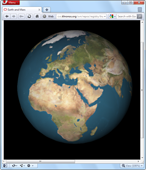
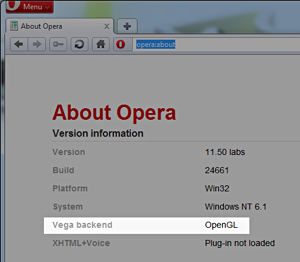

WebGL and Hardware Acceleration
Note: the features covered in this article are now available in a much more stable form in our latest Opera Next release.
A long time ago, in an office far far away...Opera released a custom build showing an implementation of a 3D canvas context . Now, more than 3 years later, we are releasing the first public build with a standards-based 3D canvas implementation using WebGL for Windows. 
WebGL is a standard developed by the Khronos group , where Opera is an active member participating in the standardization process. We have been working on a WebGL implementation since early 2009, when the standardization process started. The specification has been changing quite frequently over the past few years, but now it is starting to mature and stabilise, which makes this the perfect time to release a public preview of our current WebGL implementation.
For those of you who have never heard of WebGL, it is a context to the canvas element which gives you hardware-accelerated 3D rendering in JavaScript. The API is based on OpenGL ES 2.0, which means that it is possible to run WebGL on many different devices, such as desktop computers, mobile phones and TVs. The WebGL public wiki contains more information about the standard, including tutorials and lots of demos — so it is a good place to go if you want to see our WebGL implementation in action.
Hardware acceleration
In June 2008 — around the same time as our first 3D canvas experiments — we showed a video preview of our fully hardware-accelerated renderer . One of the requirements we had for enabling that code was that the software fallback — used when hardware acceleration is not available — should be at least as fast as what we were using in our desktop product at the time. To achieve that, we spent a lot of time and resources on optimizing our software renderer, which has been used in Opera's desktop browser since version 10.50 and has proven to be one of the fastest renderers around. Following the release of 10.50, we once again focused on our hardware renderer.
The results of this work have been rolled into this preview as well, meaning that this build also has full hardware acceleration enabled (on systems with compatible hardware and drivers).
Our hardware acceleration is a bit different from what other browsers have implemented. Most of them do full hardware acceleration of all draw operations, but only on Windows Vista and Windows 7 — dropping to a more limited set of accelerated draw operations on other platforms. Our implementation will feature full acceleration on any OS with sufficient hardware support. This means we can also use fully hardware accelerated draw operations on Windows XP, Linux, Mac OS X and OpenGL ES 2 capable devices such as recent smart-phones and web-enabled TVs.
OpenGL
This build only has an OpenGL backend. That means your system must have an OpenGL 2.x compatible graphics card and related drivers for hardware acceleration and WebGL to work. In future builds we will also add a Direct3D backend, which will reduce the requirements on drivers and should work out of the box on most modern systems.
So how can you tell if hardware acceleration is enabled? There are two easy ways to check. The first option is to load some WebGL content — if it works that means your hardware and drivers are compatible, and hardware acceleration is enabled in the browser. Alternatively, you can check the new "Vega backend" entry in opera:about — if the backend listed is OpenGL , you have hardware acceleration enabled; otherwise, the entry will show that the browser is using Software backend.
Download it!
This preview is currently only available for Windows — but builds for other operating systems are being worked on as well.
Opera 11 preview with WebGL and Hardware Acceleration for Windows
Disclaimer: this is not a stable build — it is an early preview of upcoming technologies in Opera. Neither WebGL nor hardware acceleration will be included in the upcoming release of Opera 11.10 for desktop. Some other aspects, such as SVG rendering, may not work correctly. We will continue working on these new features — fixing on all remaining bugs and optimizing our code — and we will release further preview builds to keep you up to date with our progress.
Please give us your feedback — but remember to information about which graphics card and driver version you have, and if Vega is using the OpenGL or Software backend.
Comments
-

@vargas2000
-

"Vega backend" check was moved from "opera:about" to "opera:gpu".
No new comments accepted.Chris Mills
Friday, December 16, 2011
Opera 12 alpha now has WebGL support built in, for all platforms. See opera.com/browser/next
P2O2
Wednesday, January 4, 2012
Why don't you keep the Opera docs updated?
I asked in comments to
http://dev.opera.com/articles/view/64-bit-opera-and-out-of-process-plug-ins/
about "comparison table for Opera Lab, Opera Next and Opera (stable)" but without a "feedback" from the Team.
I think such separate page with what's on the workbenches and what was accomplished would pay to advantage of Opera and facilitate to keep the documentation up to date.
Good example comes from PC-BSD:
http://wiki.pcbsd.org/index.php/PC-BSD_version_task_list
BTW. Check whole the PC-BSD Wiki and think about similar project for Opera. As I can see the Opera docs is a set of loosely coupled pages, stopping short of calling it a mess.
Regards